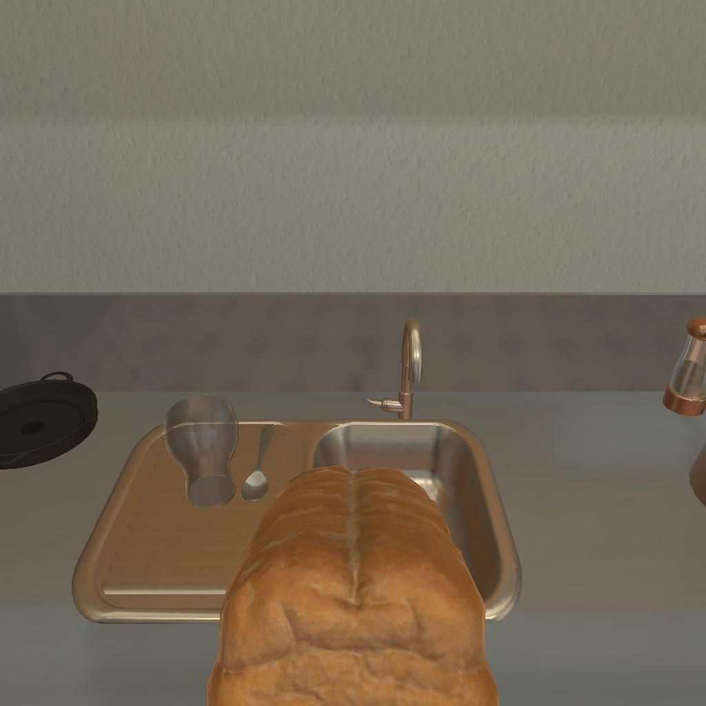

---------------------------------------------------------task: 22---------------------------------------------------------
--------------------------------------------------------------------------------------------------------------------------------------------------------------------
--------------------------------------------------------------------------------------------------------------------------------------------------------------------
Step:--------------------------------------------------------------------------12-------------------------------------------------------------------------------
----------------------------------------
VLM Prompt:
**Task**
Please perform as an embodied AI agent. Our final objective is to heat some egg and put it in countertop. Below is the plan for completing the task, the current observation, alongside historical data and admissible actions for the next step. Please determine the best action for the next step!
**Plan**
Below is a detailed step-by-step plan to complete the task.
1. Find an egg.
2. Pick up the egg.
3. Find a microwave.
4. Heat the egg with the microwave.
5. Find a countertop.
6. Place the heated egg on the countertop.
**Current Observation**
Displayed is an image capturing the current position of the agent.
**History Information**
Displayed are the previous observations with their corresponding actions.
State 1:
1. Step Index in the Plan: 1
2. Objects: Sink, Faucet, Sponge, Soap Dispenser
3. Action: go to fridge 1
State 2:
1. Step Index in the Plan: 2
2. Objects: Fridge (possibly door)
3. Action: open fridge 1
State 3:
1. Step Index in the Plan: 3
2. Objects: Bread, Lettuce, Bowl, Two Potatoes (inside the fridge)
3. Action: take bread 1 from fridge 1
State 4:
1. Step Index in the Plan: 2
2. Objects: Bread Loaf, Lettuce, Bowl, Two Potatoes
3. Action: go to microwave 1
State 5:
1. Step Index in the Plan: Correction needed
2. Objects: Microwave, Bread Loaf, Knife, Fork
3. Action: go to fridge 1
State 6:
1. Step Index in the Plan: 2
2. Objects: Bread, Lettuce, Bowl, Two Potatoes
3. Action: go to cabinet 1
State 7:
1. Step Index in the Plan: Unknown (presumed to be looking for an egg)
2. Objects: Wooden Cabinets
3. Action: open cabinet 1
State 8:
1. Step Index in the Plan: 1
2. Objects: Wooden Cabinets
3. Action: go to cabinet 2
State 9:
2. Step Index in the Plan: 1
3. Objects: Wooden Cabinets
4. Action: go to cabinet 3
State 10:
1. Step Index in the Plan: 1
2. Objects: Countertop, Coffeemachine, Sink, Kitchen Items
3. Action: go to cabinet 4
State 11:
2. Step Index in the Plan: 2
3. Objects: Countertop, Coffee Machine, Sink, Egg (inside sink), Various Kitchen Items
4. Action: go to sink 1
State 12:
2. Step Index in the Plan: 2
3. Objects: Egg, Sink
3. Action: go to sinkbasin 1
**Admissible Actions**
(1): go to cabinet 1
(2): go to cabinet 2
(3): go to countertop 1
(4): go to cabinet 3
(5): go to cabinet 5
(6): go to cabinet 6
(7): go to drawer 1
(8): go to drawer 2
(9): go to cabinet 7
(10): go to cabinet 8
(11): go to coffeemachine 1
(12): go to microwave 1
(13): go to cabinet 9
(14): go to countertop 2
(15): go to cabinet 10
(16): go to drawer 3
(17): go to drawer 4
(18): go to garbagecan 1
(19): go to drawer 5
(20): go to cabinet 11
(21): go to cabinet 12
(22): go to cabinet 13
(23): go to cabinet 14
(24): go to stoveburner 1
(25): go to countertop 3
(26): go to stoveburner 2
(27): go to stoveburner 3
(28): go to stoveburner 4
(29): go to drawer 6
(30): go to cabinet 15
(31): go to cabinet 16
(32): go to cabinet 17
(33): go to cabinet 18
(34): go to toaster 1
(35): go to drawer 7
(36): go to countertop 4
(37): go to fridge 1
(38): put bread 1 in/on sinkbasin 1
(39): clean bread 1 with sink 1
(40): clean bread 1 with sinkbasin 1
(41): examine bread 1
**Analysis Guideline**
1. Analyze the history and current observation, and then determine our current step in the plan and our current place.
2. List all visible objects related to the task in the current observation, without summarizing any as "various items."
3. Analyze the objects in the current observation based on the history and the requirements for the current step, and then determine if we can complete the step with the current observation.
4. Analyze and decide on the most appropriate action to take.
5. Summarize the analysis using the following format: "Analysis: [The summarization of the analysis], The Most Appropriate Action: (i which is the integer.): [Selected action]"
**Notes**
1. We must complete each step of the plan in order and cannot skip steps when the previous ones are not finished.
2. For "Go to" actions listed as "go to xxx [n]", interpret this as there are n distinct actions available: "go to xxx 1", "go to xxx 2", ..., "go to xxx n". Select one specific action from these options instead of using "go to xxx [n]".
3. If receptacles such as drawers, cabinets, and so forth are closed in the current observation, we may try to open them.
4. Pay attention to synonyms and ensure clarity in the terms used.
5. We must determine and provide the single action which must be in the **Admissible Actions**.
6. If there is no history available, we are at the first step and the current place is "Unknown".
**Answer**
Please select the most suitable action by following the **Analysis Guideline**, keeping the above **Notes** in mind.
----------------------------------------
----------------------------------------
VLM Response:
Analysis: According to the history information, we have found an egg in the sink (State 11), and the current step in the plan is to pick up the egg (Step 2). The current observation shows us at the sink with visible objects including the egg, sink, faucet, and kitchen items. Based on the history and requirements for the current step, we can complete the step with the current observation as the egg is accessible in the sink. Therefore, the most appropriate action is to pick up the egg from the sink.
The Most Appropriate Action: (12): go to microwave 1
----------------------------------------
----------------------------------------
>>> Refine VLM Response and Get Pure Action: go to microwave 1
----------------------------------------
-----------------------------------------------------------------
Running time: 11.461683988571167 seconds
Total Money: 0
-----------------------------------------------------------------
-----------------------------------------------------------------
Summarization Prompt:
**Context**
Analysis: Since there is no history information, we are at the first step in the plan, which is to find a statue. The current place is unknown. In the current observation, we see a floorlamp next to an armchair with a small table that has a small object on it, which could potentially be the statue we are looking for. Since the plan requires us to find a statue first and it appears there might be one on the table next to the armchair, we should investigate this object to determine if it is the statue we need.
The Most Appropriate Action: (1): go to armchair 1
**Summary**
1. Step Index in the Plan: 1
2. Objects: Floorlamp, Armchair, Small Table, Small Object (potential statue)
3. Action: go to armchair 1
**Context**
Analysis: According to the history information, we have found an egg in the sink (State 11), and the current step in the plan is to pick up the egg (Step 2). The current observation shows us at the sink with visible objects including the egg, sink, faucet, and kitchen items. Based on the history and requirements for the current step, we can complete the step with the current observation as the egg is accessible in the sink. Therefore, the most appropriate action is to pick up the egg from the sink.
The Most Appropriate Action: (12): go to microwave 1
Please summarize the context by following above examples when providing the summary, and ensure that only the summary is included, without any extra explanation.
**Summary**
-----------------------------------------------------------------
-----------------------------------------------------------------
Summarization Response:
2. Step Index in the Plan: 2
3. Objects: Egg, Sink, Faucet, Kitchen Items
4. Action: pick up egg from sink
-----------------------------------------------------------------
-----------------------------------------------------------------
Text Observation:You arrive at loc 14. The microwave 1 is closed.
-----------------------------------------------------------------
UNSUCCEED